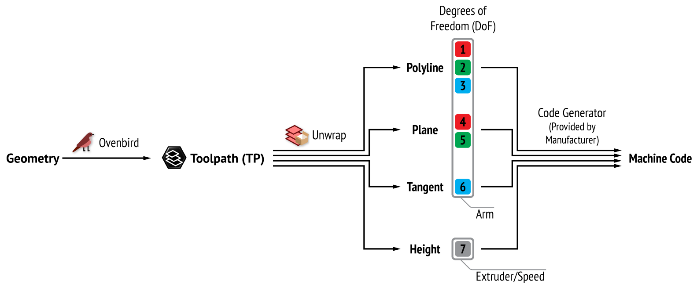

To robots
Ovenbird does not directly produce machine codes for robots/gantries since they are setup-dependant. The printing team typically receive from the extruder's manufacturer a Grasshopper file that converts geometry into machine codes.
Only a few wires are needed to pipeline the Ovenbird Toolpath/Continuous Toolpath to a 6 degrees of freedom (DoF) robot.

Ovenbird piple for robots (Toolpath)

Ovenbird piple for robots (Continuous Toolpath)
The following table summarizes how the machine code information can be sourced in Ovenbird from Unwrap Toolpath and Unwrap Continuous Toolpath (see From/to curves).